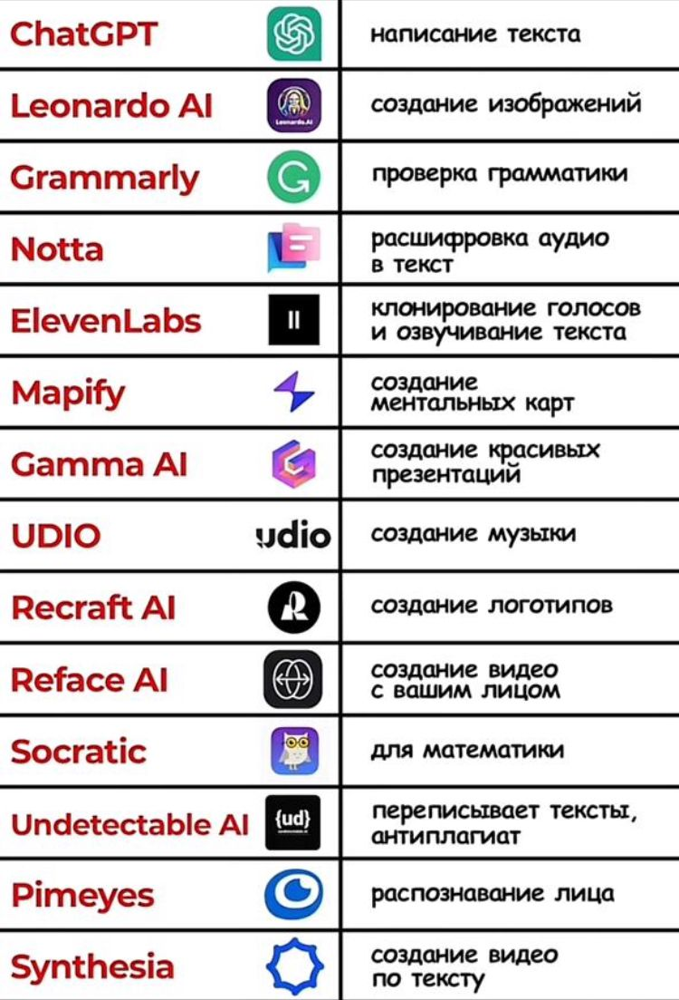
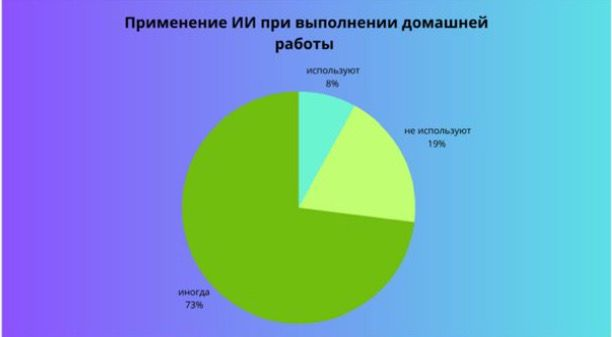
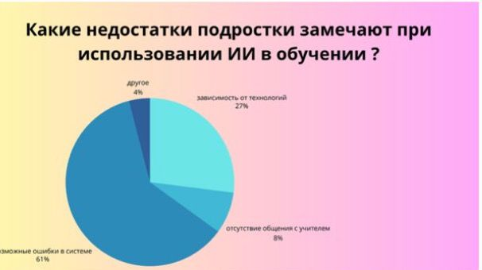
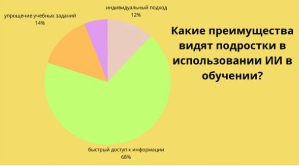
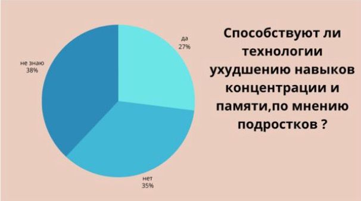
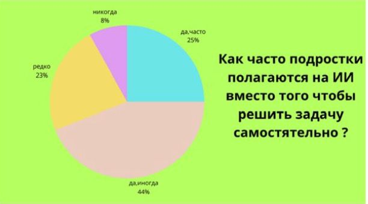
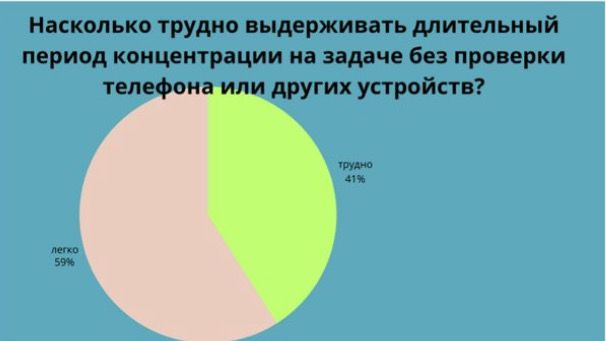
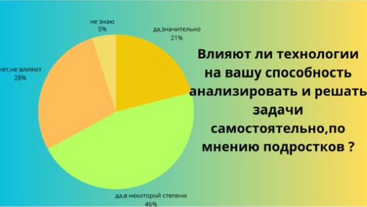
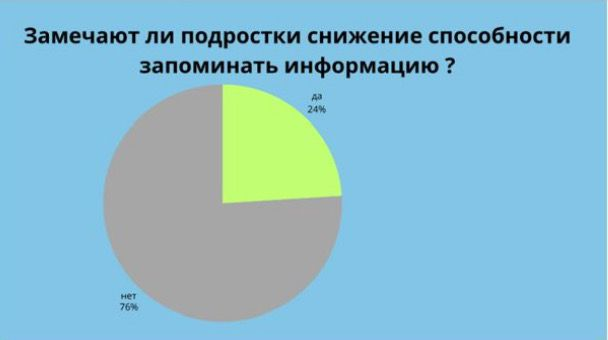
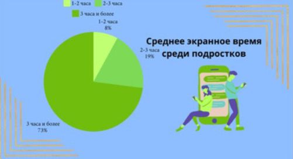

Использование нейросетей в обучении
Нейросети могут стать мощным инструментом в образовательном процессе. Вот как они могут быть использованы:
- Анализ данных: Нейросети могут анализировать исторические данные и помогать создавать более точные и интересные презентации.
- Создание исторических изображений: Инструменты как Midjourney и Kandinsky могут визуализировать исторические сцены и артефакты.
- Интерактивные карты: МойЛенс позволяет создавать таймлайны и исторические карты, что делает обучение более увлекательным.
- Игровые элементы: Использование сервисов, как Акинатор, помогает делать обучение более интерактивным и мотивирующим.

Это раширенный список инструментов использующийся для процесса обучения
Статистическая информация
В этой секции представлены статистические данные, иллюстрирующие влияние технологий на когнитивные функции и обучение:

Статистика 1

Статистика 2

Статистика 3

Статистика 4

Статистика 5

Статистика 6

Статистика 7

Статистика 8

Статистика 9

Статистика 10
Рекомендации для учителей
Учителя могут эффективно использовать нейросети и цифровые ресурсы для улучшения процесса обучения:
- Интегрировать технологии для повышения интерактивности и вовлеченности.
- Использовать ИИ для создания персонализированных и динамичных заданий.
- Не заменять, а дополнять традиционные методы обучения современными технологиями.
Важно сочетать традиционные методы с цифровыми для поддержания интереса и развития когнитивных навыков у учащихся.